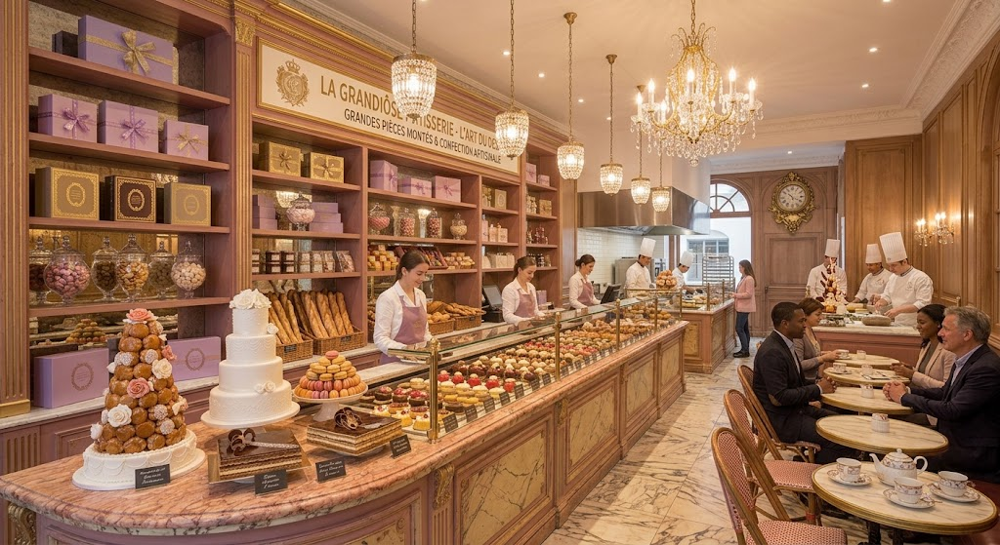

Endinsa't en un raconet de París on l'artesania i l'elegància es troben. Un espai càlid i romàntic dissenyat per gaudir de la millor alta pastisseria francesa: des de delicats macarons i croissants cruixents fins a dolços artesanals elaborats amb tota la passió.
Reserva araHistòria: Nascuda de la passió per la tradició parisenca, la nostra pastisseria combina receptes ancestrals i l'alta d'artesania per portar el caliu de París a cada mossegada.
Filosofia: Creiem en l'excel·lència dels detalls, seleccionant ingredients d'alta qualitat per oferir un refugi elegant i romàntic on cada dolç sigui una experiència inoblidable.